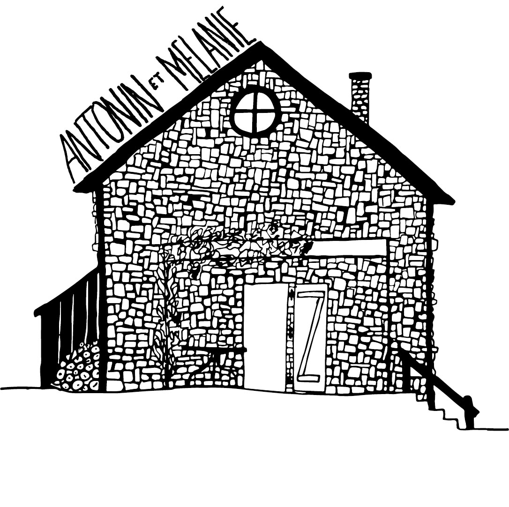
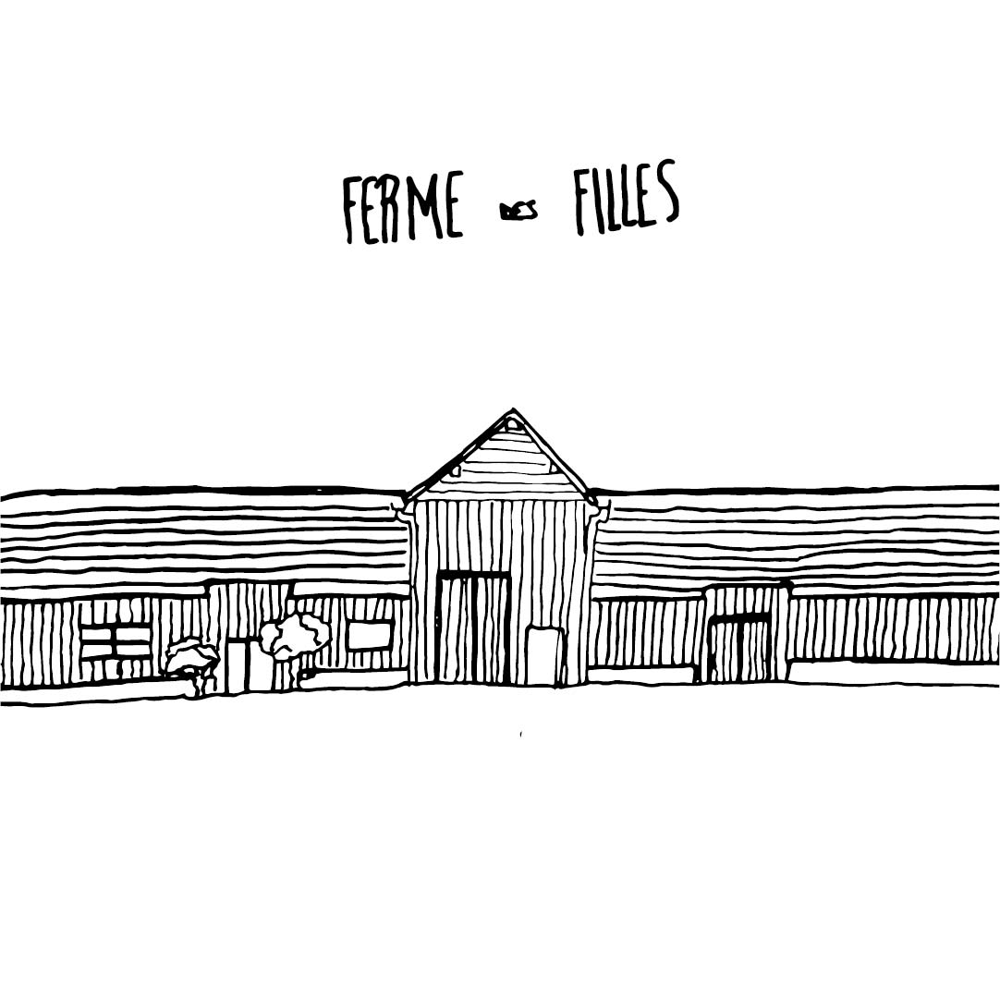
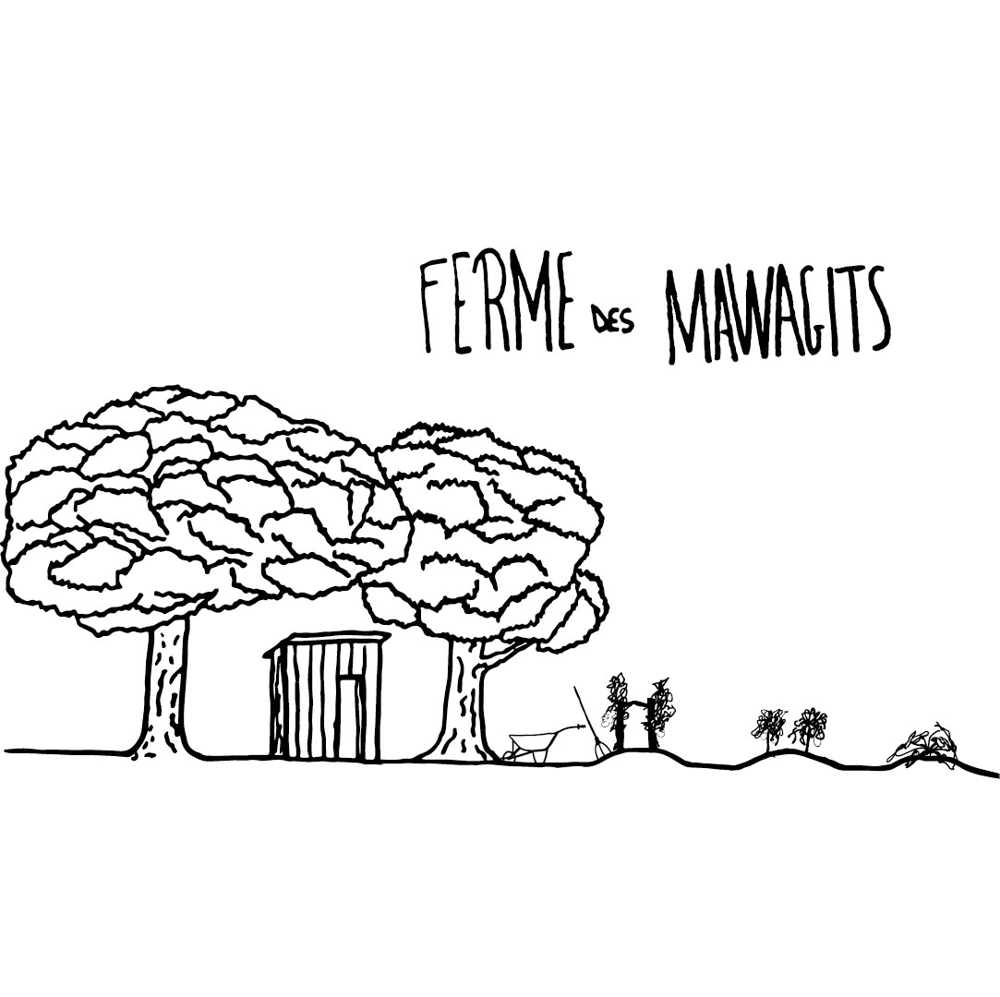

Vendanges From: Vino To: Disco 2021



Some visuals of Agro Micro, a mini series of interviews about agro-ecological farmers we made with Romain Tissot in 2020
My interests are in syntropic agriculture & agroecology to produce wine.
I jumped on farming in 2020 because I think agriculture & peasantry as a huge potential against climate & social change.
From: Vino To: Disco is the first wine out of my journey. It's a pet'nat' made of pinot noir, négrette & grolleau gris.
You can contact me via Instagram if you want to taste it.
Vendanges From: Vino To: Disco 2021
Some visuals of Agro Micro, a mini series of interviews about agro-ecological farmers we made with Romain Tissot in 2020